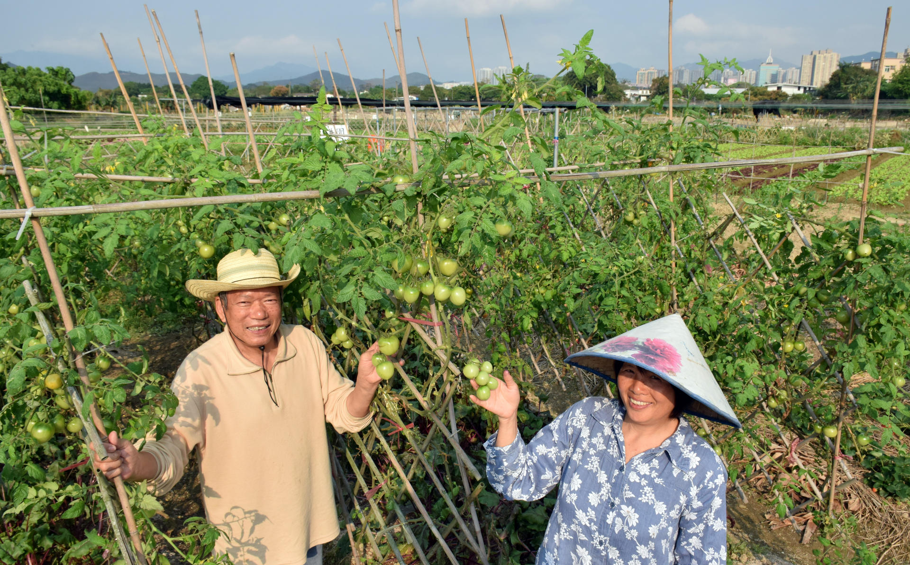

You might wondrously hear that Hong Kong has its own agriculture! Indeed, nearly all people in Hong Kong belong to urban population. Besides, land in Hong Kong is limited to be used for such stereotype economy. It is hard to imagine how agriculture can develop in the city.
Agriculture in Hong Kong is undertaken mostly in the urban fringes. Currently, only 6.9 square kilometres out of the territory's 1,106 square kilometres of land area are farmed. Some 4,300 farmers, about 0.11% of the territory's total work force, are engaged in agriculture.
In 1950s, there were many agricultural people planting rice in Yuen Long and Fan Ling. Due to the project of urban development, some previous farmers leave to urban. Up to 2015, the area of agriculture significantly decreased from 14,000 hectares to 5,100 hectares
Singapore is also a renowned small but developed city. People always compare these two cities in many fields
It obviously that agricultural land in Hong Kong and Singapore both is about 14,000 hectares in 1950s. Also, these two figures had the same decreasing trend. But up to 2015, while 5,100 hectares agricultural area remained in Hong Kong, there was only 0.66 hectares in Singapore.
As at March 2016, 272 local farms covering a total area of 84 hectares and 36 vegetable farms operated by Hong Kong farmers in Guangdong and Ningxia covering 2,905 hectares have been accredited. There were 313 accredited retail outlets located in different districts to provide easy access to accredited vegetables for consumers.
Up to March 2016, 275 local farms covering a total area of 99.6 hectares have joined the Department's "Organic Farming Support Service". Together, on average they produced about 6 tonnes of organic vegetables per day, including vegetable varieties such as lettuce, white cabbage, flowering cabbage, water spinach, Chinese spinach, Chinese kale, garland chrysanthemum, eggplant, bitter cucumber, wax gourd, yard-long bean, cherry tomato, carrot, etc.
A number of local farms have started offering leisure activities like pick-your-own produce, renting of land plots for hobby farming, and farming experience courses for visitors. The Department continued to publish "A Guide to Hong Kong Leisure Farms" and update an interactive webpage and a mobile application to provide information on these farms to facilitate the public to make a visit and to further promote leisure farming.